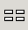
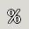

The Format Toolbar ...

The Format Toolbar.
-
 Font Chooser.
Font Chooser.
The user can change the font of a selection either by typing the name of a new font in the text area of this box or by clicking on the little arrow to the right of the text area. This will cause a menu to appear from which a font can be chosen.
-
 Font size
Font size
The user can change the font size of a selection by typing the number of a different font size or by clicking on the little arrow to the right of the entry box and selecting the perferred size.
-
 Bold
Bold
Change the style of the current cell to be bold, or un bold it if it is already bold.
-
 Italic
Italic
Change the style of the current cell to be italicized.
-
 Underline
Underline
Change the style of the current cell to be underlined.
-
 Left justify..
Left justify..
Justify the contents of the cell to the left of the cell.
-
 Center
Center
Center the content of the cells.
-
 Right Justify
Right Justify
Justify the content of the cells to the right side of the cells
-
 Center across the selection
Center across the selection
Center the content of the cells on the selected cells.
- Merge Cells
Merge the selected cells into a single cell.
-  Split Merged Cells
Split previously merged cells into separate cells.
-
 Money
Money
Sets the format of the selected cells to be monetary.
-  Percentage
Sets the format of the selected cells to be a percentage.
-
 Thousands separator
Thousands separator
Sets the format of the selected cells to use thousands separator.
- Increase the displayed precision.
Increases the number of decimals shown in the currently selected cell.
-
 Decrease the displayed precision.
Decrease the displayed precision.
Decreases the number of decimals in the currently selected cell.
-
 Decrease the displayed indentation.
Decrease the displayed indentation.
This button decreases the indentation of selected elements.
- Increase the displayed indentation.
This button increases the indentation of selected elements.
-
 Change the display borders.
Change the display borders.
This button and drop down menu can be used to set the borders of all the cells in the selection.
- Set the Background Colour.
This button and drop down menu can be used to set the back ground colour.
-
 Set the Text Colour
Set the Text Colour
This can be used to change the colour of the text.